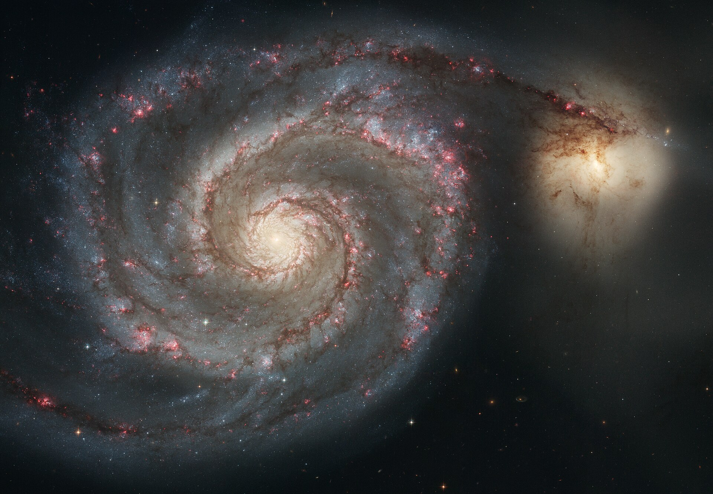

Malströmsgalaxen är en spiralgalax som ligger mellan 25 och 45 miljoner ljusår från jorden och har en diameter som är 65 000 ljusår. Denna galax har faktiskt två aktiva kärnor. Den ena som ligger på utsidan ser ut att virvla i den andra, liksom en malström. Malströmsgalaxen är synlig genom kikare under mörka himmel.
